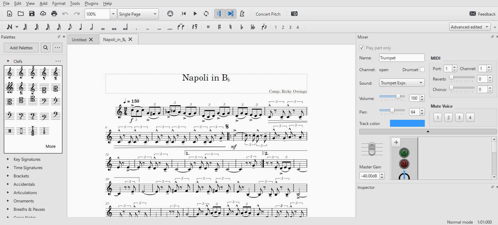
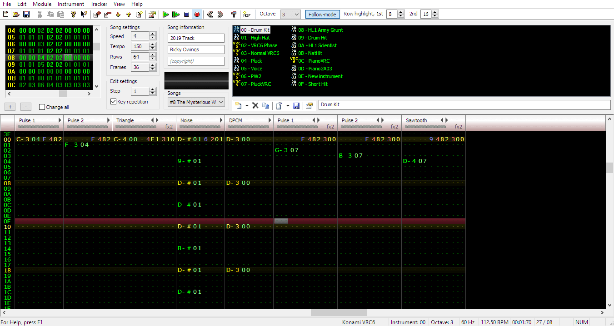
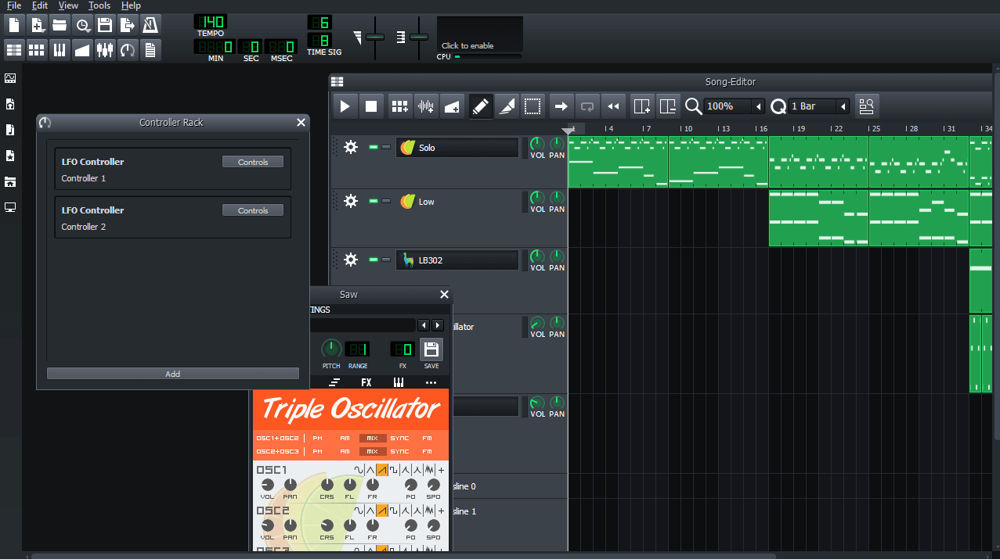

Background
When I was in third grade, I took private lessons on how to play the trumpet. When I went into middle school, I joined the band class. playing trumpet. I did some competitions and got to go to the OSU honor band in middle school while also joining the jazz band. When I was in 8th grade, I went into the high school marching band. I did that for a total of five years and it was really fun. I still enjoy playing trumpet to this day
First Software

I have been making music for a very long time. The first piece of software that I used was called Musescore. The software was a music notation software, so it was made for making sheet music for people to play. Instead of using it for that, I would use it to make cool sounding songs because it was fun.
Second Software

After Musescore, I got into the other piece of software called Famitracker. Famitracker is a software that emulates old game consoles sound cards. When you make music with this software, there are only so many tracks that you can have layered at the same time. This means that you have to work around that limitation by using different tricks like arpeggios to emulate having more instuments. The result can often lead to songs that sound pretty cool based on the limitations that you imposed on yourself by using the software.
Third Software

After that, I then got into another software called LMMS. It is not really the best software out there, as things like FL Studio are way better to make music with, but LMMS is free and is pretty powerful once you learn the ropes of how it works. One thing that I really like about it is the automation tracks. You can basically control any dial that appears in the software automatically throughout the sound. Like, for example, you can automate the tempo to go gradually lower in a different part of the song to emulate a ritardando.